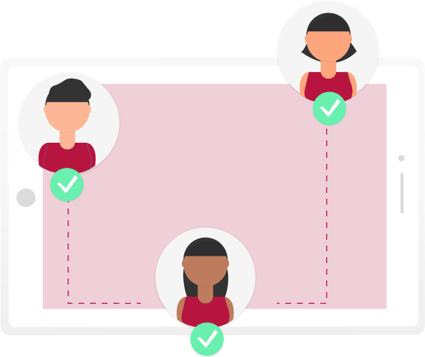
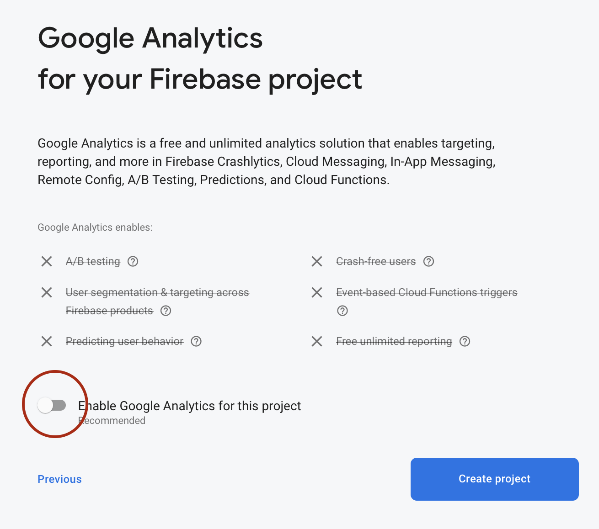
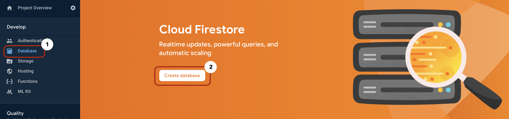
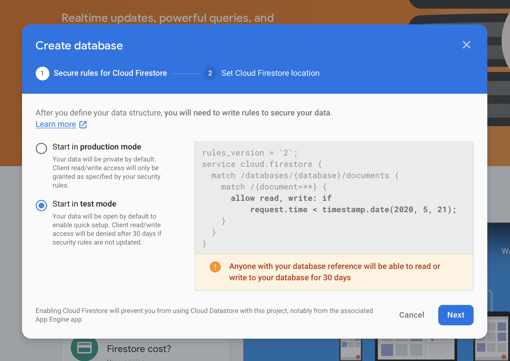
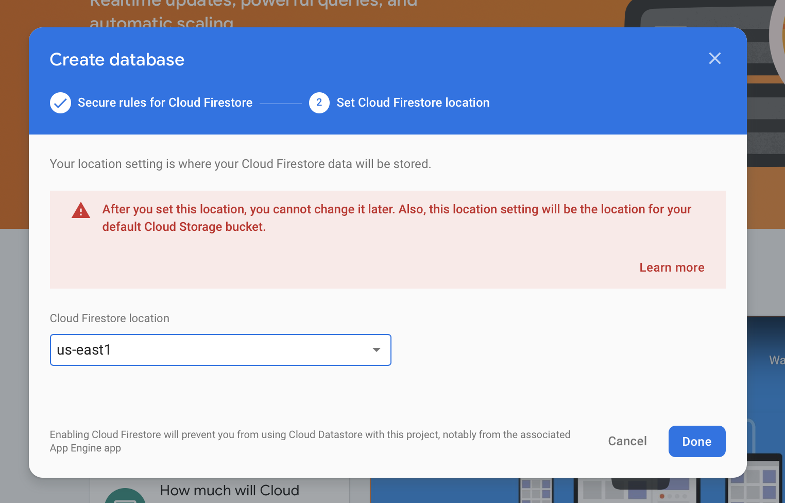
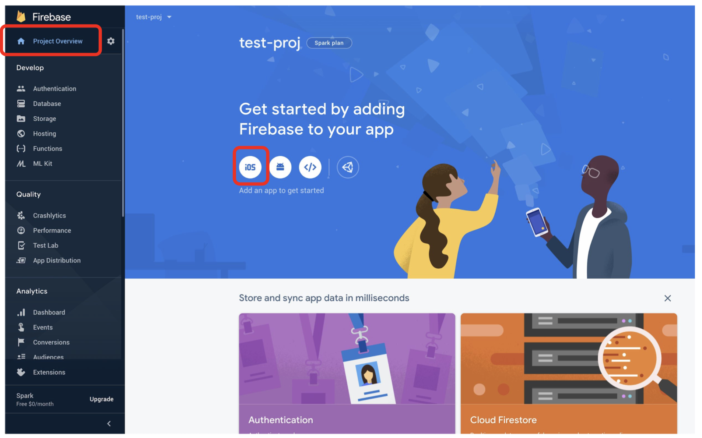
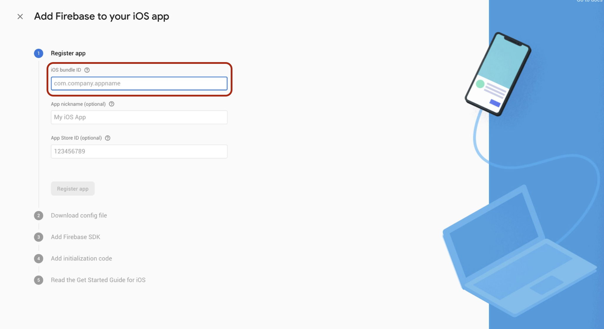
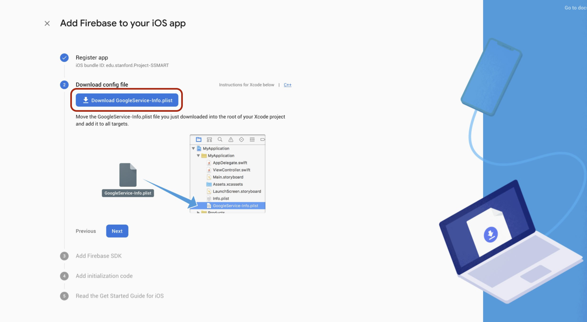
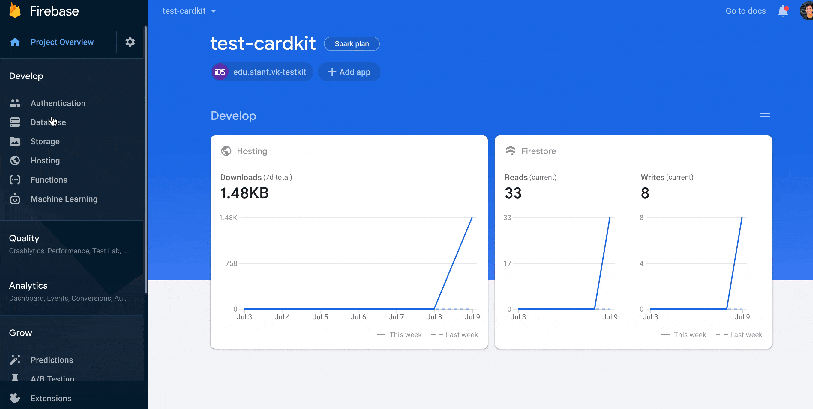

Set Up Application Infrastructure
Prior to CardinalKit, researchers would need to implement a backend solution of their choosing so data that their subjects were gathering could be securely stored. CardinalKit leverages existing database architecture on the Google Cloud platform to make it as frictionless as possible to get started with collecting information on your users.
Create a new Firebase Database

1. Make a Firebase Account
Head on over to firebase.google.com and set up an account.
Note: you may need to use your personal email instead of your university assigned one.
2. Set up a New Firebase Instance
Go to your Firebase console (top right) and add a new project. Name the project to be something related to your app for future reference.
It is important that you disable Google Analytics because it is not BAA compliant and then create your project. It will will take around a minute to set up.

Once ready, click "continue". Click "Database" under the "Develop" section in the sidebar, and then "Create database".

Be sure to start the database in test mode so your research IT can configure the rules for the storage.

Finally, set the deploy location to be "us-east1" (or any location close to your study) and click "done".

3. Link App to Firebase Project
The last step is to configure your CardinalKit app to communicate with your newly created Firebase database. In the sidebar, select "Project Overview" and then "iOS".

Fill out the registration form using the bundle ID you selected on while creating your CardinalKit project in Xcode from Step 4 of the previous section. You do not need to answer the other questions.

Download the "GoogleService-Info.plist" file when prompted. There will be a "GoogleService-Info.plist" in the Xcode project as well located in "CardinalKit-Example" > "CardinalKit" > "Supporting Files". Replace this one with the new file you just downloaded. Run the app again and make sure no errors pop up.

Enabling Authentication
Setting up Sign in with Apple
Read the entire "Before You Begin" section of the Authenticate Using Apple on iOS Firebase tutorial and make sure you have the correct configurations for this feature.
In your Firebase project, navigate to "Authentication" > "Sign-in method" > "Apple" and set "Apple to Enabled. This enables all Sign in with Apple features in your application from Firebase. The image above shows how to get to this section.
The last step is to open the CKConfiguration.plist file and edit the Enabled key under the Sign in with Apple key to 1.
Add Custom Rules to the Firebase Database

The final step is to allow authorized users to upload data to Firebase. Navigate to the Database tab in your Firebase dashboard. Find the "Rules" section and edit the text to match the following rule set:
rules_version = '2';
service cloud.firestore {
match /databases/{database}/documents {
// This rule allows anyone on the internet to view, edit, and delete
// all data in your Firestore database. It is useful for getting
// started, but it is configured to expire after 30 days because it
// leaves your app open to attackers. At that time, all client
// requests to your Firestore database will be denied.
//
// Make sure to write security rules for your app before that time, or else
// your app will lose access to your Firestore database
match /{document=**} {
allow read, write: if request.auth != null;
}
}
Congrats! You're now set up to use CardinalKit as a starting point for your research app - run the app within Xcode and test it out!